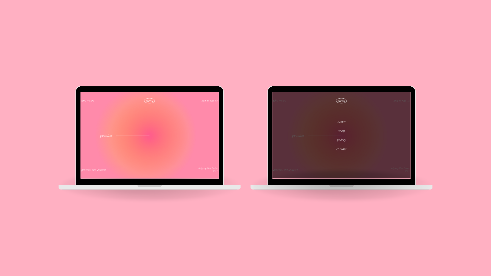

personal project - web, 2022
A personal project involving a proposed redesign of the homepage and menu for an events space website.
The main aim of the project was to incorporate brand features such as colour palette and minimalistic style in building a new landing page
for the website, to practice translating design features to a web-based format. This was also an opoprtunity to experiment with implementing
modern graphic design and typography trends.